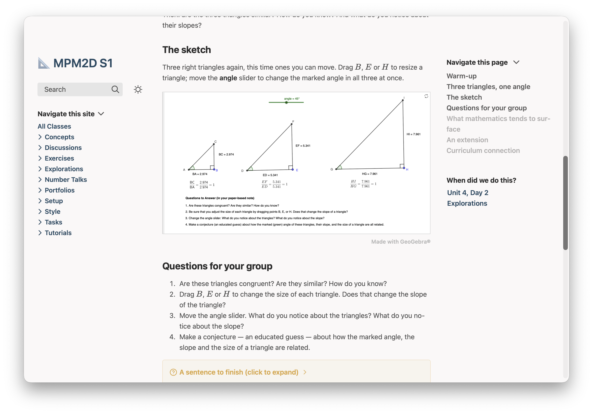

Visualizations
Diagrams, graphs and GeoGebra sketches, each written as a few lines in a note. Type them in Obsidian, preview the section, and students get a diagram drawn for them, a graph they can move, or a sketch with sliders and points they can drag.
Each part of this page shows the text you type, exactly as you type it, beside what students get from it. The examples come from the ready-made mathematics course for MPM2D, so you can open the same pages in a course of your own.
Nothing here changes a page you already have. A page without these blocks is built exactly as before.
Handouts that print properly have a page of their own: Printing.
So do programs students run on the page (Code), and questions they check for themselves (Quizzes).
Diagrams and graphs
Two kinds of mathematics figure, each a block of plain text in the note itself — never a picture file to redraw when a number changes.
A diagram, drawn from TikZ
TikZ is the drawing language of LaTeX. Plantoir draws the diagram once, when the site is built: students download a crisp picture, it follows the site's light or dark theme, and it prints black on white.
What you type
```tikz
% alt: Triangle ABC with AB = 4 and BC = 6, beside the larger similar triangle DEF with DE = 10 and EF unknown.
\begin{document}
\begin{tikzpicture}
\draw[thick] (0,0) node[below left]{$A$} -- (2.4,0) node[below right]{$B$} -- (0.8,1.6) node[above]{$C$} -- cycle;
\node[below] at (1.2,0) {$4$};
\node[above right] at (1.6,0.8) {$6$};
\draw[thick] (4,0) node[below left]{$D$} -- (10,0) node[below right]{$E$} -- (6,4) node[above]{$F$} -- cycle;
\node[below] at (7,0) {$10$};
\node[above right] at (8,2) {$?$};
\end{tikzpicture}
\end{document}
```What students get
What it accepts
- The first line,
% alt: …, is one sentence a screen reader says instead of the picture. \usepackage{…}and\usetikzlibrary{…}go before\begin{document}; the picture goes between\begin{document}and\end{document}. One picture to a block.pgfplots,circuitikz,chemfig,tikz-cd,amsmathand TikZ's own libraries work.siunitx,mathtoolsandtkz-euclidedo not.- A diagram that can't be drawn shows students “This diagram couldn't be drawn.”, and Plantoir tells you the page, the diagram and the line.
To see the diagram inside Obsidian as you write, install Obsidian's TikZJax plugin: the site is drawn with the same engine.
A graph students can move
A functionplot block is drawn in the student's browser from the site's own files. They can drag it, and zoom with ⌘ or Ctrl and a scroll. On paper it prints at the bounds you wrote.
What you type
```functionplot
---
bounds: [-4, 5, -6, 10]
alt: The parent parabola y = x^2 and y = -2(x - 1)^2 + 3, which opens down, is narrower, and has its vertex at (1, 3).
---
y = x^2
y = -2(x - 1)^2 + 3
```What students get
The graph of y = x^2 and y = -2(x - 1)^2 + 3 is drawn here when the page has loaded.
From Transformations of Parabolas: the parent and the finished sketch on one set of axes. Try dragging it.
What it accepts
- The settings come first, between
---lines, then one function per line:y = x^2. - Settings, all optional:
title,xLabel,yLabel,bounds: [xMin, xMax, yMin, yMax],grid,disableZoom: true, andalt— one sentence a screen reader says instead of the graph. - The grapher's own spelling:
^for powers,x*(x - 1)rather thanx(x - 1),logfor the natural log,PIandEin capitals, brackets on every function. - It can't mark a point or shade a region. For a marked point, draw the graph in TikZ with
pgfplots.
In Obsidian the block shows as its text; the graph is drawn when you preview.
Function graphs pan and zoom. For sliders and geometry students can drag, use a GeoGebra sketch.
GeoGebra sketches students can drag
A geogebra block puts a working GeoGebra sketch on the page: points to drag, sliders to move, the algebra beside it if you want it. It waits as a picture of the sketch until a student taps Open the sketch, so a page with three sketches costs nothing until one is used. GeoGebra itself comes from your own class site, never from geogebra.org.
Say which sketch in one of three ways.
1. A sketch you saved from GeoGebra
Make the sketch in GeoGebra, save it as a .ggb file, and put the file beside the page, or in the course's Media folder. Then name it:
What you type
```geogebra
file: Slope Angle Conjecture.ggb
alt: Three right triangles of different sizes that share one marked angle set by a slider. Points B, E and H resize them.
```What students get

From The Slope-Angle Conjecture in the ready-made MPM2D course: students move the angle and resize the triangles until they can say what the slope belongs to.
Obsidian hides .ggb files in its file list until you turn on Settings ▸ Files and links ▸ Detect all file extensions; the file is there either way. The file: line is plain text, not a link: if you rename the file, change the line too. A page copied to another course with Copy a Page does not take the file with it, so a sketch you use on several pages is best kept in Media, where any page finds it by its name.
2. Commands, typed in the block
Type the commands one per line, exactly as you would in GeoGebra's Input Bar. A line starting // is a note to yourself.
What you type
```geogebra
alt: The parabola y = a(x - 2)^2 beside y = x^2, with a slider for a.
a = Slider(-3, 3, 0.5)
f(x) = a(x - 2)^2
g(x) = x^2
SetColor(g, "gray")
```GeoGebra reads the commands when a student opens the sketch, so open it once in your preview: a line it cannot run shows under the sketch as “Line 4 couldn't run”, with GeoGebra's own explanation. Commands can also follow file:, to change a sketch you saved.
3. A sketch on geogebra.org
Name a public sketch by its address or its id:
```geogebra
material_id: https://www.geogebra.org/m/ju3f2kbg
alt: Three right triangles that share one marked angle set by a slider.
```Plantoir saves a copy of the sketch the first time the site is built, and uses that copy from then on, so students never wait on geogebra.org. If the author changes the sketch there and you want the new one, change the block — add version: 2, and raise it next time — and the next preview fetches it again. If geogebra.org can't be reached and there is no saved copy yet, Plantoir says so and names the page. The sketch is shown with its author's name and its licence under it.
What it accepts
- Settings first, one
key: valueto a line, then any commands.file:ormaterial_id:, never both. alt— one sentence a screen reader says instead of the sketch. Always give one.- Optional:
caption,app(classic,graphing,geometryor3d),widthandheight,toolbarandalgebra(trueorfalse), andversion. - A sketch can go in a page or in a quiz question — in its question or its explanation, not in one of its choices (see Quizzes).
- On paper it prints as a picture of the sketch as the student left it, with the credit under it.
- GeoGebra's own words in a sketch are in English.
- A sketch that can't be shown stays as its text on the page, and Plantoir tells you the page, the block and the line.
In Obsidian the block shows as its text; the sketch appears when you preview. A GeoGebra add-on for Obsidian that reads the same settings exists, made by somebody else; the website doesn't need it.
Every sketch carries “Made with GeoGebra®”, linked to geogebra.org, as GeoGebra asks of anyone who shows its sketches.
On the Mac. The Windows version gets this in a later release.
Or ask Claude or Codex
You don't have to learn any of this. Plantoir writes its guidance for these blocks into your working folder, and keeps it up to date, so Claude Code or Codex started there already knows how to write each one — when a graph suits and when a diagram does, the patterns that work, and what to avoid. There is nothing to install or paste.
Asked this, in a working folder holding an MPM2D course:
Add a graph of y = 3(x - 2)^2 - 4 beside its parent function y = x^2 to the page "courses/MPM2D/Unit 2/Parabolas.md", under the example.Claude added this block under the example:
```functionplot
---
title: y = 3(x - 2)^2 - 4 and its parent
bounds: [-4, 6, -6, 10]
alt: The parent parabola y = x^2 and y = 3(x - 2)^2 - 4, which opens up, is narrower, and has its vertex at (2, -4)
---
y = x^2
y = 3(x - 2)^2 - 4
```and this is the graph it draws:
The graph of y = x^2 and y = 3(x - 2)^2 - 4 is drawn here when the page has loaded.
Ask for a slider and the guidance steers it to a GeoGebra sketch, with the slider written as one of its commands — or, for a sketch you already saved, to the file: line that names it.
Open either from a course's menu with Revise With ▸ Claude… or Codex…, which starts it in your working folder.